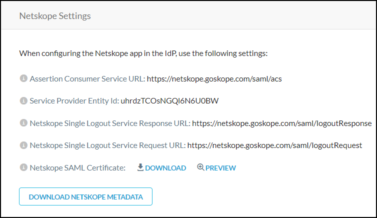

Configure Single Sign On for the Netskope UI
The Netskope platform supports local and the SAML SP (Service Provider) workflows to provide authentication and authorization. This allows for two-factor authorization supported by the IdP and eliminates the need to create local accounts for admins on the Netskope UI with the exemption of a tenant admin in case Single Sign On (SSO) is not available.
To set up SSO in the Netskope UI, go to Settings > Administration > SSO.
SSO Settings
There are two sets of SSO setting configurations:
Netskope Configuration entered at the IdP (SSO Vendor)
Note
If you disable or migrate the SSO vendor, remove the SSO configuration and Netskope application from your SSO vendor dashboard.
IdP-related configuration entered in Netskope admin UI
Netskope Configuration at the IdP (SSO Vendor)
There are two parameters:
ACS (Assertion Consumer Service) URL: This is the URL the IdP sends the assertion to after authenticating the user.
entityId: Your unique Netskope tenant ID.
These configuration parameters can be obtained from the tenant UI by going to Setting > Administration > SSO.
|  |
IdP-related Configuration in the Netskope Admin UI
Obtain these from your SSO vendor:
IdP Single Sign-On URL
IdP Entity ID
X.509 Certificate (IdP Public Key)
IdP Single Log Out (SLO) URL
On the SSO page in the Netskope UI, click Edit Settings and enter your IdP information. Enter the SLO information and enable SLO in the Edit dialog box.
The "Enable SSO" flag provides you the option to force authentication. When this option is unchecked, users will be required to login to the application.
 |
Optionally, select the Sign SSO Authentication Request checkbox to use SSO to sign authentication requests. Download the Netskope SAML certificate and upload it to the IdP to validate Netskope's signed SSO Authentication Requests.
Another option is to Disable Force Authentication. By checking this box, Netskope will not send ForceAuthn request in the SAML Request.
From the IdP/SSO vendor we expect a value admin-role to provide us with authorization info. This field can have the following values:
Tenant Admin
Delegated Admin
Predefined and custom (created) roles.
Tip
Some 3rd party IdP systems do not accept blank spaces in their role attribute values. A workaround for this is to clone Netskope predefined roles and rename them, omitting any spaces in the new names.
Admin Role Sent by IdP | Check against Local DB | Outcome |
|---|---|---|
Nothing sent | If the user is a provisioned user in the UI, then the admin account type configured for the user will be used to identify the privilege | Return error if no role found |
Tenant admin | No | Log in with role Tenant Admin |
Delegated admin | No | Log in with role Delegated Admin |
Read-only roles | Checked against roles configured in the tenant UI | If role name is found, use that role. If not found, return an error. |
Tip
If you need to bypass the SSO, log in to your tenant directly using the URL: https://<tenant name>.goskope.com/locallogin
Single Logout
Netskope supports single logout. When SSO is configured, a user can be redirected to a specific logout page.
Timeout
Currently if an admin is idle for 15 minutes, the admin is logged out and sent to the login page. If SLO is enabled, we should now send him to the logout page configured under SLO settings.
Verify SSO for the Netskope UI
Enter the tenant login URL (
https://<tenant hostname>.goskope.com) into a browser window.One of two things happen:
If SAML has not been configured for this tenant, then the username/password page shows up as it does normally. You'll need to authenticate locally.
If SAML has been configured for this tenant, then Netskope will send an SAML AuthnRequest to the IdP. After the IdP authenticates the user, it will send an SAML Assertion back to Netskope with the admin's authentication (email address - NameID) and authorization (admin-role) credentials.
On receiving the assertion, Netskope checks the authorization credentials. If authorization credentials pass they are used. If not, then Netskope tries to get the authorization attributes from our local tables. If local authorization values cannot be found, then Netskope reports an error.